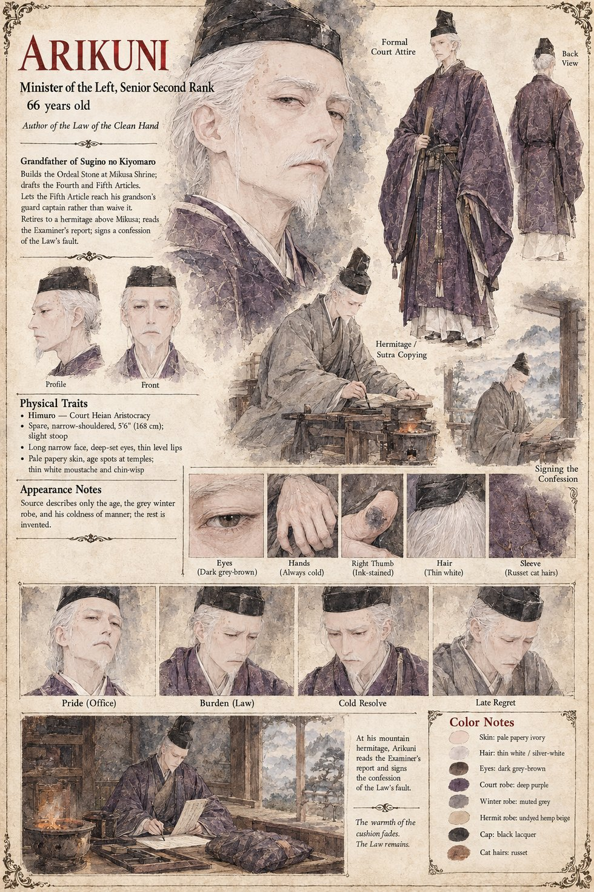

Arikuni
Sugino no Arikuni · Minister of the Left of Himuro, Senior Second Rank · author of the Law of the Clean Hand · grandfather of Kiyomaro · 66 at the opening, 71 when he reads the report
Sixty-six, Minister of the Left of Himuro and, as the manuscript has it, the coldest man in the realm: he audits the ice tribute himself, bundle by bundle, in the last week of winter, and can tell from the sheen of a rice-ledger whether its keeper has been drinking. He has risen to the Senior Second Rank by being correct more often than his colleagues and unembarrassed about it. His grandson Kiyomaro is the only creature in the realm who has persuaded him to laugh aloud at his own supper. What he is proudest of is the Law of the Clean Hand. Eleven years before, a woman accused of poisoning her husband's elder wife put her arm in the scalding pot, and a physician's report afterward showed that the elder wife had died of a tumour; he abolished the ordeal within the month and built at the shrine of Mikusa a stone. Its Fourth Article, drafted in a single night, has the Stone take an officer as he stands in his office, with the badges of his oath upon him. Its Fifth, older than the Law by four centuries, is the Founder's Rule that he learned at seven from a primer that called it a measure against the Bloom Sickness, let no act go unsigned: the officer who signs the Order of the Day answers for the day, unless the Bureau of Inquiry enters a finding that no hand was at fault, a clause he added last, as a courtesy to chance.
When the boy dies and Sukenori mentions the Article at the pyre, in the gentlest possible voice, he understands that to hope aloud for a finding of no hand would be to confess that the Stone's verdict is optional, and does not examine the understanding underneath it, that such a finding would leave the boy dead for no reason at all. That night he warms the cat's cushion against his own chest before he sets it down, and says to an open window, with the steward waiting inside the screen, The Law will want a hand; Tamenaga hears an instruction. He sends for the Examiner. At Mikusa, wrapped in a grey winter robe with Azuki curled in his sleeve, he hears the Captain ask to have it entered that he did not do it, and says, in the voice he has used for thirty years to dispose of petitions, It will be entered. He stops being able to remember the Captain's face, only the hand on the stone and its steadiness, and says near the end that he had never in his life been so sure that something had been done wrong. Asked by Sukenori whether a Law that reaches a captain for a death at a rite should reach a granary for a loss of rice, he says Yes.
He resigns in the first winter of the Rising and retires to a hermitage on the slopes of Mikusa-yama, where he copies sutras for the dead: the boy first, then the captain on a sheet of his own, then the eleven. In the fifth winter Tamenaga, dying, tells him of a paper in the Bureau's lower archive, and he goes down himself, breaks his own household's seal on the cord and reads Yasutsugu's eleven sheets twice, from the pony to the cat. At the line about three tufts of russet fur he slides to the floor and makes a sound like the whine of a door in a gale, and the old cat climbs into his lap. Nobody asked you, he says to her. The Rule, he thinks, was not wrong; it had never been written for a world with a cat in it. He does not try to repeal the Law, which could not be repealed without saying that every hand it had taken was a hand it should have refused. He asks instead for the one clause that can be granted without being explained, that no accused be shown the Stone until the report has been read aloud to the Ministers who attest, and he copies the eleven sheets out in his own hand, adds a sentence that the Law had sent a captain to the Stone on the strength of a hand that did not exist, signs it in full, as the Founder's Rule required, and pastes it into the last leaf of the Book of the Ordeal. He waits through the winter for the summons that a signed account of the Law's own fault ought to bring. It does not come, because nobody has read the Book since the Captain. He dies that winter, and the cat in the spring.
The manuscript gives his age, rank, coldness, habits, the grey winter robe and the seventy-one years he has when he reads the report. The sheet says in so many words that it has only the age, the robe and the coldness to work from; its 5 ft 6 in, narrow shoulders and slight stoop, thin white moustache and chin-wisp, age spots, ink-stained right thumb and always-cold hands, the purple court robe and black lacquered cap, and the undyed hemp robe of the hermitage are its own invention.
“The Law will want a hand.”
Appears In

Related Subjects


Related Records

On the night of the pyre Sugino no Arikuni warms the cold cushion against his chest beneath his robe before setting it down for Azuki, who has refused her dinner for three days; the steward Tamenaga waits inside the screen to ask whether the lamp may be lit.

In the lower archive of the Bureau of Inquiry Sugino no Arikuni, who has read the Examiner's eleven sheets twice, has slid from the stool to the floor with his forehead against the table, and Azuki, old and thin, comes into the lamplight to climb into his lap.